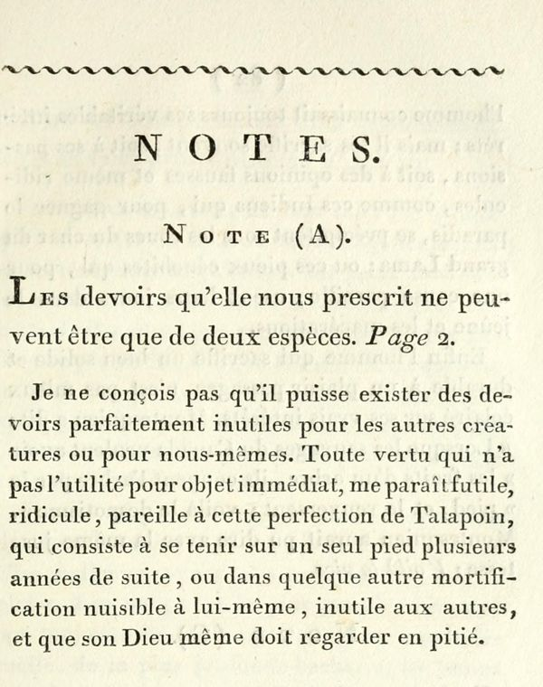

“Pareille à cette perfection de Talapoin” (note A)
French: Notes, note (A), scan. Highlighted: the words Lecky quotes.

The duties it prescribes to us can only be of two kinds. Page 2.
I cannot conceive that there can be duties perfectly useless to other creatures or to ourselves. Every virtue that does not have utility for its immediate object seems to me futile and ridiculous, like that perfection of the Talapoin which consists in standing on one foot for several years on end, or in some other mortification harmful to himself, useless to others, and which his God himself must regard with pity.
Original French
Les devoirs qu’elle nous prescrit ne peuvent être que de deux espèces. Page 2.
Je ne conçois pas qu’il puisse exister des devoirs parfaitement inutiles pour les autres créatures ou pour nous-mêmes. Toute vertu qui n’a pas l’utilité pour objet immédiat, me paraît futile, ridicule, pareille à cette perfection de Talapoin, qui consiste à se tenir sur un seul pied plusieurs années de suite, ou dans quelque autre mortification nuisible à lui-même, inutile aux autres, et que son Dieu même doit regarder en pitié.
Backlinks
Every place in Rationalism in Europe that links to this page (generated automatically when the site is built).
- Chapter VI: note 185